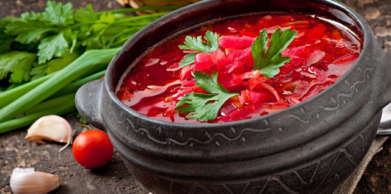
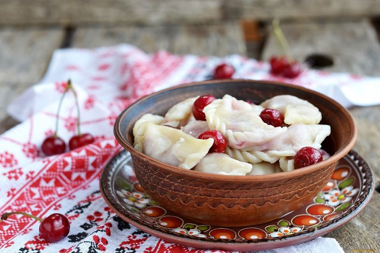

Борщ
Справжній український борщ у вас вийде, якщо ви маєте в своєму арсеналі свіжі смачні продукти. Вам знадобляться м'ясо, капуста, картопля, буряк, морква, томатна паста, сало, часник, цибуля, зелень, сіль, перець. Також – квасоля, якщо ви вирішили приготувати борщ український з квасолею, і мука для галушок, якщо запланований український борщ з галушками. Приготування українського борщу починається з бульйону, для нього підійде свинина, яловичина, курка. Оптимальний вибір для українського борщу – свинячі реберця. Овочі, крім картоплі, нарізають соломкою і тушкують. Окремо додаємо в бульйон сиру капусту, адже без неї не вийде справжнього борща. Останній штрих – це шматочок сала з часником.
Вареники
Вареники – улюблена домашня борошняна страва у наших регіонах. Вони в тому чи іншому вигляді присутні у всіх слов'янських кухнях, а в українській служать однією з візитівок, і навіть неодноразово оспівані в національних літературних джерелах. Вареники бувають дуже різними, і їх вигляд, смак і консистенцію багато в чому визначає тісто, з якого вони виготовлені. Їх можна зліпити з простого або заварного тіста. Саме вареничне тісто на кефірі або будь-якому іншому кисломолочному продукті найчастіше використовують для приготування справжніх українських вареників з різними начинками – сиром, картоплею, капустою, м'ясом, а також легендарних вареників з вишнями та іншими ягідними начинками.
Голубці
Традиційно голубці готують з використанням фаршу з яловичини, змішаного з рисом. Проте начинку можна вибирати, виходячи зі своїх смакових переваг. У різних будинках можна зустріти голубці з куркою, бараниною, овочами, картоплею або рибою. Хтось вважає за краще просто відварити ці "кишеньки з капусти" в підсоленій воді, хтось тушкує їх в томатному соусі з додаванням моркви і болгарського перцю. Який би рецепт приготування ви не вибрали, варто прислухатися до кулінарних порад, ефективність яких перевірена часом. Так ваші голубці вийдуть акуратними і смачними.